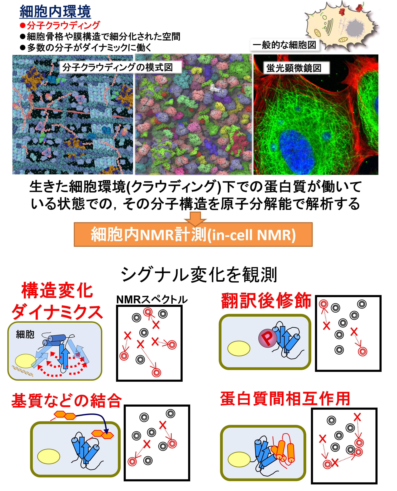

Visualizing Biomolecular Shape and Motion through Physicochemical Methods
We apply high magnetic fields, X-rays, molecular simulations, and machine learning to biomolecular structure analysis. This page introduces the basic concepts of these methods and how we use them in our laboratory.
Nuclear Magnetic Resonance (NMR) Spectroscopy
Basic Principles of NMR
Nuclear magnetic resonance (NMR) spectroscopy is a method for observing biomolecular structure, motion, and interactions at atomic resolution. Biomolecules contain atoms such as hydrogen (1H), carbon (13C), nitrogen (15N), and phosphorus (31P), whose nuclei have weak magnetic properties. An NMR instrument uses a large superconducting magnet to generate a powerful magnetic field. When molecules are placed in this field, their atomic nuclei behave like tiny bar magnets with north and south poles (Figure 1). Observing this magnetic behavior provides atomic-level information about molecular structure, motion, and intermolecular interactions. Magnetic resonance imaging (MRI), widely used to create cross-sectional images of the human body, operates on the same fundamental principle. MRI maps the distribution of water molecules, whereas NMR spectroscopy measures organic and biological molecules to obtain information about the positions and motions of their atoms.

In-cell NMR
In-cell NMR is one of the very few methods that can observe the structures, motions, and interactions of biomolecules in living cells at residue or atomic resolution. The cellular interior is densely packed with enormous numbers of biomolecules, creating a crowded environment known as molecular crowding. Observing biomolecules under these more physiological conditions, rather than only in a test tube, is essential for accurately understanding their structures and functions. In in-cell NMR, the protein or nucleic acid of interest is labeled with stable isotopes and either expressed inside the cell or introduced from outside. Because most other cellular molecules are unlabeled, signals from the target molecule can be observed selectively. Long measurements of living cells can be complicated by nutrient depletion, pH changes, and loss of cellular activity. We therefore use a bioreactor that continuously supplies fresh culture medium. Ligands or drugs can also be added to the incoming medium, allowing us to examine—while the cells remain alive—how external stimuli alter the target protein's structure, motion, and interactions.

Small-Angle X-ray Scattering (SAXS)
Features of SAXS and Its Use in Our Laboratory

Small-angle X-ray scattering (SAXS) examines molecular size and shape by illuminating biomolecules in solution with X-rays and measuring the scattered radiation. X-ray crystallography is a well-known structural method that can provide atomic-level three-dimensional structures after a molecule has been crystallized. Because crystals are a specialized environment, however, care is needed when considering how closely the resulting structures represent molecules in solution or in cells. SAXS requires no crystallization and observes molecules dissolved in aqueous solution. Although it does not provide detailed atomic-resolution information, it reveals the overall size and shape of a molecule and is useful for examining conformational distributions of flexible proteins. An important goal of our laboratory is to understand how biomolecules behave under conditions close to those in living systems. NMR excels at local, atom-specific information, whereas SAXS captures global molecular size and shape. We combine SAXS with NMR-centered analysis to understand biomolecules from local structure to overall architecture.
Molecular Dynamics (MD) Simulation
Features of MD Simulation and Its Use in Our Laboratory
Molecular dynamics (MD) simulation calculates the motion of the atoms that make up a biomolecule and examines how its shape changes over time. Real atoms contain nuclei and electrons, but conventional MD does not calculate each electronic state directly. Instead, atoms are treated as spheres with mass and charge, while the stretching and bending of covalent bonds are described mainly by simple spring-like equations. These approximations reduce computational cost and make it possible to simulate proteins and nucleic acids containing enormous numbers of atoms. Although the model is simplified, advances in computational technology have made MD a powerful and widely used method for studying biomolecular structure and motion. In our laboratory, we use MD simulations to investigate molecular motions and structures that are difficult to capture directly by experiment. In particular, we adjust molecular models so that calculated properties agree with experimental data such as NMR measurements, thereby complementing the experiments and providing a more detailed visualization of dynamic biomolecular behavior.

Machine Learning (ML) and Deep Learning (DL)

Applications of Machine Learning
Artificial intelligence (AI) has brought major changes to our lives and society and is used to automate and streamline a wide range of tasks. Its use is also rapidly expanding in the life sciences, and our laboratory applies AI technologies to the analysis of biomolecular structure and motion. One of the key technologies underlying AI is machine learning, in which computers learn from large datasets to identify hidden features and patterns. Machine learning includes many approaches; one representative example is the neural network, a mathematical model inspired by networks of biological neurons. Neural networks with many layers that can learn complex features are known as deep learning (DL). We use machine learning and deep learning for NMR signal reconstruction, spectral analysis, and molecular structure analysis based on experimental data from NMR and SAXS. By combining experiments with AI, we aim to reveal biomolecular structures and motions in greater detail than is possible using conventional methods alone.